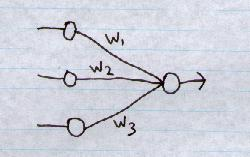
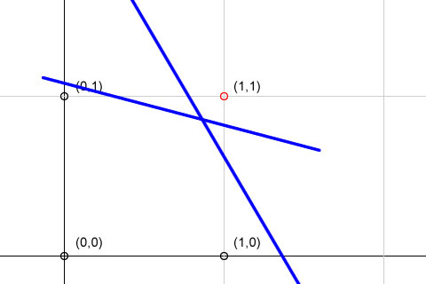
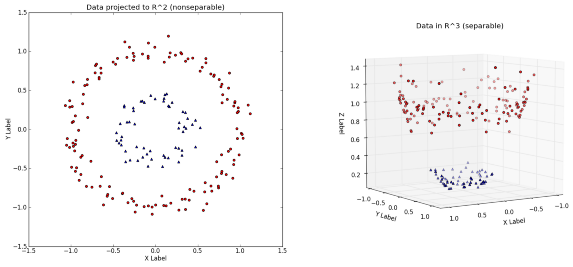
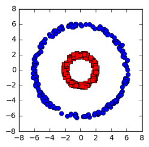
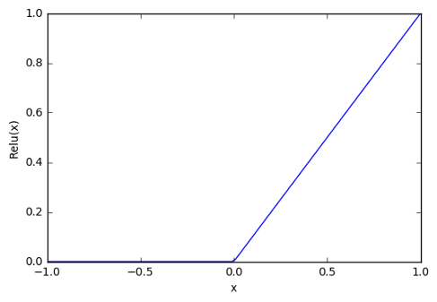
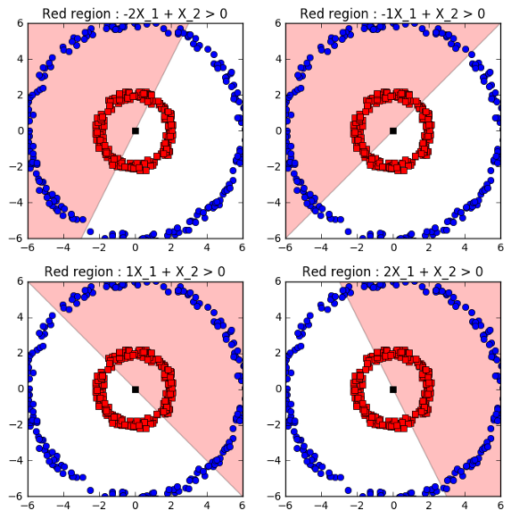
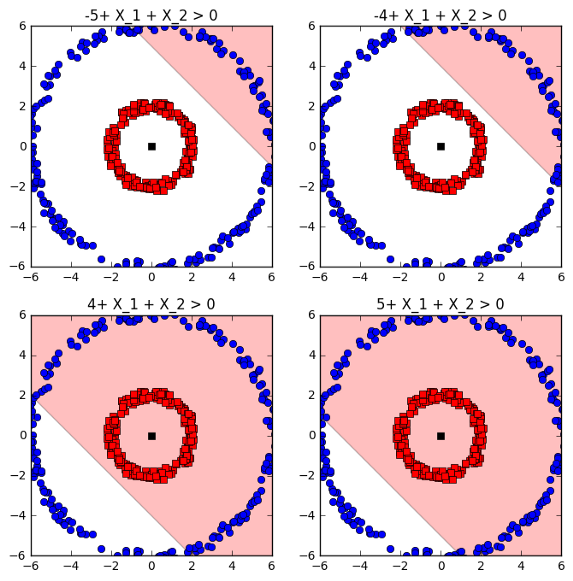
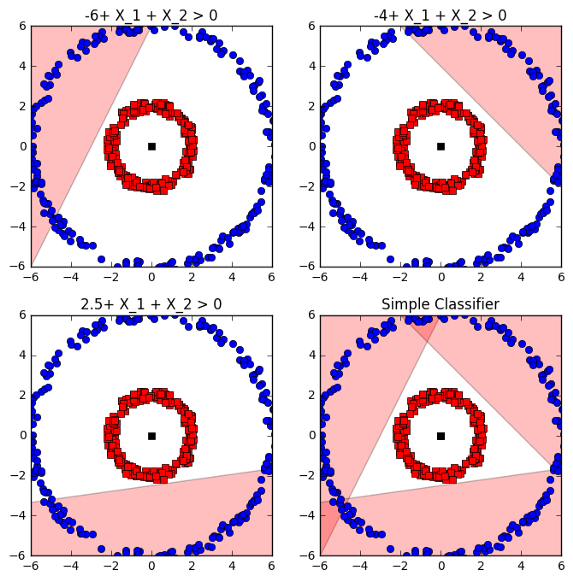
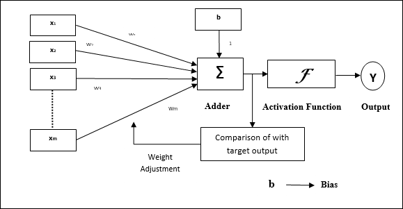
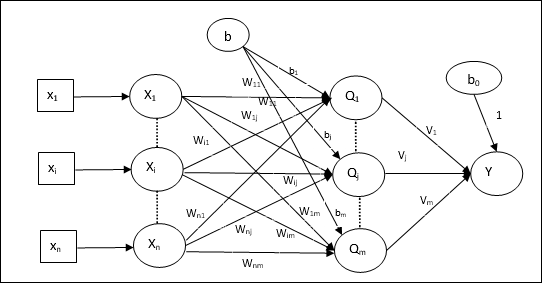

Supervised learning in Artificial Neural Networks
Topics to study are:
- Single layer Neural Network
- Linear separability
- One Dimension
- Two Dimension
- Three Dimension
- Extending to n dimensions
- Handling linearly non-separable sets
- Define a nonlinear function
- Effect of changing weights and bias
- Training algorithm
- Adaptive Linear Neuron (Adaline)
- Architecture
- Training Algorithm
- Multiple Adaptive Linear Neuron (Madaline)
- Architecture
- Training Algorithm
- Error Correction & gradient descent rules
- Multi-layer network architecture
- Back Propagation Algorithm (BPA)
- Strengths of BP learning
- Deficiencies of BP learning
- Limitations of Backpropagation learning
- Feed forward Network
- Radial-Basis Function (RBF) network
- Learning strategies of RBF
Single layer Neural Network
Afternoon fellas ...!!! Today we are going to start with some subtopics of single layer networks.
So, we are starting with the most basic networks in neural networks i.e. single layer networks.
- A single-layer neural network represents the most simple form of NN, in which there is only one layer of input nodes that send weighted inputs to a subsequent layer of receiving nodes, or in some cases, on receiving node.
- This single-layer design was part of the foundation for systems which have now vbecome much more complex.
- One of the early examples of single-layer NN was called a "perceptron". The perceptron would return a function based on inputs, again, based on single neurons in the physiology of the human brain.
- The perceptron: Input is multi-dimensional (i.e. input can be a vector)
- input x = (I1),I2), .., In)
- Input nodes (or units) are connected (typically fully) to a node (or multiple nodes) in the next layer.

Linear separability
Ik its a lazy dayy. I'm also feeling very off to work but we have to work right !!!
Let's just dive right in and complete this mf !!
One Dimension
Two Dimensions
- On extending this idea to two dimensions, some more possiblities come into existence. Consider the following:

Two classes of points
- Here, we're like to separate the point (1,1) from the other points. You can see that there exists a line that does this. In fact, there exist infinite such lines. So, these two "classes" of points are linearly separable. The first class consists of the point (1,1) and the other class has (0,1), (1,0) and (0,0).
- Now consider this:
- In this case, you just cannot use one single line to separate the two classes (one containing the black points and one containing the red points). So, they are linearly inseparable.
Three dimensions
Extending to n dimensions
Things go up to a lot of dimensions in NN. So to separate classes in n-dimensions, you need an n-1 dimensional "hyperplane".
Handling linearly non-separable sets
After noon peeps !!! Hope you are all well. Today we are going to start from where we left.
- Non-separable input vectors are the ones that are responsible for linear non-separability and cannot be learned without forcing errors on the rest of inputs. That is, if non-separable vector is correctly 'learned' (i.e. it is assigned to the designated side of a hyperplane) then there must exist at least another input vector which is on the wrong side (i.e. opposite to its designated side) of the hyperplane.
- One can say learning a non-separable vector makes an error to be committed in the learning process.
- In general linearly separable data is data that can be classified into different classes by simply drawing line (or a hyperplane) through the data. But in practical examples linearly separable data is rarely available.
- So, to handle linearly non-separable data kernel trick can be applied, where data is transformed using some nonlinear function so the resulting transformed points become linearly separable. A simple example is shown below where the objective is to classifly red and blue points into different classes. Its not possible to use linear separator, however by transforming the variables, this becomes possible.

- Here, We will show a simple example to illustrate how NN learning is a special case of kernel trick which allows them to learn nonlinear functions and classify linearly non-separable data. We will use the same above example mentioned

Example of linearly inseparable data
- NN can be represented as y = W2phi(W1x + B1) + B2. The classification problem can be seen as a 2 part problem, one of learning W1 and other of learning W2. Changes in W1 results in different functional transformation of data via phi(W1x + B1), and as the underlying function phi is nonlinear, phi(W1x + B1) is a nonlinear transformation of data X. These nonlinear functions are then combined using linear neurons via W2 and B2.
Define a nonlinear function
- Although any nonlinear functio can work,a good candidate is Relu. Relu can be described as a function that is 0 for X < 0 and identity for X > 0.

Relu Activation function
Effect of changing weights and bias
- We typically would compute weights for neurons using a backpropagation scheme, but as the objective is only to illustrate how nonlinear function are used to classify linearly non-separable data, I will set these weights by hand.
- Consider the case where there are 2 features X1 XB2, and the activation input to rely is given by W1X1 + X2.
- In this case, weight on second neuron was set to 1 nd bias to zero for illustration. Figure below shows the effect of changing the weight results in changing the region where the values are retained, and the white is where values of points are zero.

Red region is W1x1 + X2 > 0 for different W1s.
- Now we add bias to the special case where output of the neuron is X1 + X2 + B. The effect of changing B is changing the intercept or the location of dividing line.

Effect of changing B in X1 + X2 + B.
- Figures above show that by changing B, the intercept of the line can be changed. Therefore, by changing B and W and having multiple regions, different regions in the space can be carved out to separate red and the blue points above.
- This is the primary mechanism of how NN are able to learn complex nonlinear functions and perform complex nonlinear transformations. Infact, if the activation function is set as a simple linear function, NNs lose their nonlinear function approximation capabilities.
- By changing weights and biasses, a region can be carved out such that for all blue points w2relu(W1X + B1) + 0.1 > 0. This is shown in figure below:

Combining different nonlinear function (relu) regions allows for classification of linearly inseparable data.
Training Algorithm
Hey peeps, we are back. So you know I am really confused which training algorithm should I explain or which not.
You know what I think ! I think I should explain the ones which are not mentioned in the topics which we have to cover.
Let the party begin:
- As we all know, supervised learning takes place under the supervision of a teacher. This learning process is dependent. During the training of ANN under supervised learning, the input vector is presented to the network, which will produce an output vector. This output vector is compared with the desired/target output vector. An error signal is generated if there is a difference between the actual output and the desired/target output vector. On the basis of this error signal, the weights would be adjusted until the actual output is matched with the desired output.
- Although there are many supervised algorithms available but we are going to study only few which are the most basic ones. Algorithms are:
Perceptron (Perceptrons can be trained for both single and multiple networks)
Adaptive Linear Neuron (Adaline)
Multiple Adaptive Linear Neuron (Madaline)
Back Propagation Neural Networks (BPN Networks)
- Before going further, I want to make something clear that perceptron as we know is already been discussed earlier and back propagation is in the topics so, We are only discussing about Adaline and Madaline.
Adaptive Linear Neuron (Adaline)
Adaline as it must clear by know stands for Adaptive Linear Neuron, is a network having a single linear unit. It was developed by Widrow and Hoff in 1960. Some important point about Adaline are :
- It uses bipolar activation function.
- It uses delta rule for training to minimize the Mean-Square Error MSE between the actual output and the desired/target output.
- The weights and the bias are adjustable.
Architecture
The basic structure of Adaline is similar to perceptron having an extra feedback loop with the help of which the actual output is compared with the desired/target output. After comparison on the basis of training algorithm, the weights and the bias will be updated.

Training Algorithm
- Initialize the following to start the training -
- Weights
- Bias
- learning rate α
For easy calculation and simplicity, weights and bias must be set equal to 0 and the learning rate must be set equal to 1.
- Continue step 3-8 when the stopping condition is not true.
- Continue step 4-6 for every bipolar training pair s:t.
- Activate each input unit as follows:-
xi = si (i = 1 to n)
- Obtain the net input with the following relation:-
yin = b + (i to n)⅀ xiwi
Here 'i' is bias and 'n' is the total number of input neurons
- Apply the following activation function to obtain the final output:-
f(yin) = { 1 if yin ≥ 0 & -1 if yin < 0 }
- if y ≠ t then,
wi(new) = wi(old) + α(t - yin)xi
b(new) = b(old) + α(t - yin)
- if y = t then,
wi(new) = wi(old)
b(new) = b(old)
Here 'y' is the actual output and 't' is the desired/target output and (t - yin) is the computed error
- Test for the stopping condition, which will happen when there is no change in weight or the heighest weight change occurred during training si smaller than the specified tolerance.
Multiple Adaptive Linear Neuron (Madaline)
As it should be clear that Madaline stands for Multiple Adaptive Linear Neuron, is a network which consists of many Adaline in parallel. It will have a single output unit. Some points about Madaline:
- It is just like a multilayer perceptron, where Adaline will act as a hidden unit between the input and the Madaline layer.
- The weights and the bias between the input and Adaline layers, as in we see in the Adaline architecture, are adjustable.
- The Adaline and Madaline layers have fixed weights and bias of 1.
- Training can be done with the help of Delta rule.
Architecture
The architecture of Madaline consists of "n" neurons of the input layer, "m" neurons of the Adaline layer, and 1 neuron of the Madaline layer. The Adaline layer can be considered as the hidden layer as it is between the input layer and the output layer, i.e. the Madaline layer.

Training Algorithm
By now know that only the weights and bias between the input and the Adaline layer are to be adjusted, and the weights and bias between the Adaline and the Madaline layer are fixed.
- Initialize the following to start the training:-
- Weights
- Bias
- learning rate α
For easy calculation and simplicity, weights and bisad must be set equal to 0 and the learning rate must be set equal to 1.
- Continue step 3-8 when the stopping condition is not true.
- Continue step 4-6 for every bipolar training pair s:t
- Activate each input unit as follows:-
xi = si (i = 1 to n)
- Obtain the net input at each hidden layer, i.e. the Adaline layer with the following relation:-
Qinj = bj + (i to n)⅀ xiwijj = 1 to m
Here 'b' is bias and 'n' is the total number of input neurons
- Apply the following activation function to obtain the final output at the Adaline and the madaline layer:-
f(x) = { 1 if x ≥ 0 & -1 if < 0 }
Output at the hidden Adaline unit
Qj = f(Qinj)
Final output of the network
y = f(yin)
i.e. yinj = bo + (j=1 to m)⅀ Qjvj
- Calculate the error and adjust the weights as follows:-
- if y ≠ t and t = 1 then,
wij(new) = wij(old) + α(1 - Qinj)xi
bj(new) = bj(old) + α(t - Qinj)
In this case, the weights would be updated on Qj where the net input in close to - because t = 1.
- if y ≠ t and t = -1 then,
wik(new) = wik(old) + α(-1 - Qink)xi
bk(new) = bk(old) + α(-1 - Qink)
In this case, the weights would be updated on Qk where the net input is positive because t = 1.
Here 'y' is the actual output and 't' is the desired/target output.
- If y = t then
There would be no change in weights.
- Test for the stopping condition, which will happen when there is no change in weight or the highest weight change occured during is smaller than the specified tolerance.
Error-Correction Learning
Today we are going to start to learn more about supervised NN more precisely error correction learning in NN.
- Error-Correcting Learning, used with supervised learning, is the technique of comparing the system output to the desired output value, and using that error to direct the training.
- In the most direct route, the error valyes can be used to directly adjust the tap weights, using an algorithm such as the backpropagation algorithm.
- If the system output is y, and the desired system output is known to be d, the error signal can be defined as:
e = d - y
- Error correction learning algrithms attempt to minimize this error signal at each training iteration. The most popular learning algorithm for use with error-correction learning is the backpropagation algorithm
Gradient descent & rules
In this we are going to study about gradient descent. Here we intend to discuss the gradient descent algorithm in order to fully understand the backpropagation algorithm.
- The gradient descent algorithm is used to minimize an error function g(y), through the manipulation of a weight vector w.
- The algorithm is:
wij[n+1] = wij + ηg(wij[n])
- Here, η is known as the step-size parameter, and affects the rate of convergence of the algorithm (or learning rate)
- If the step size is too small, the algorithm will take a long time to converge. If the step size is too large the algorithm might oscillate or diverge.
- The gradient descent algorithm works by taking the gradient of the weight space to find the path of steepest descent. By following the path of steepest descent at each iteration, one will either find a minimum, or the algorithm could diverge, if the weight space is infinitely decreasing. When a minimum is found, there is no guarantee that it is a global minimum, however.
-
An analogy for understanding gradient descent
The basic intuition behind gradient descent can be illustrated by a hypothetical scenario. A person is stuck in the mountains and is trying to get down (i.e. trying to find the global minimum). There is heavy fog such that visibility is extremely low. Therefore, the path down the mountain is not visible, so they must use local information to find the minimum. They can use the method of gradient descent, which involves looking at the steepness of the hill at their current position, then proceeding in the direction with the steepest descent (i.e. downhill). If they were trying to find the top of the mountain (i.e. the maximum), then they would proceed in the direction of steepest ascent (i.e. uphill). Using this method, they would eventually find their way down the mountain or possibly get stuck in some hole (i.e. local minimum or saddle point), like a mountain lake. However, assume also that the steepness of the hill is not immediately obvious with simple observation, but rather it requires a sophisticated instrument to measure, which the person happens to have at the moment. It takes quite some time to measure the steepness of the hill with the instrument, thus they should minimize their use of the instrument if they wanted to get down the mountain before sunset. The difficulty then is choosing the frequency at which they should measure the steepness of the hill so not to go off track.
In this analogy, the person represents the algorithm, and the path taken down the mountain represents the sequence of parameter settings that the algorithm will explore. The steepness of the hill represents the slope of the error surface at that point. The instrument used to measure steepness is differentiation (the slope of the error surface can be calculated by taking the derivative of the squared error function at that point). The direction they choose to travel in aligns with the gradient of the error surface at that point. The amount of time they travel before taking another measurement is the step size.
Multi-layer network architecture
A multi-layer neural network contains more than one layer of artificial neurons or nodes. They differ widely in design. It is important to note that while single-layer neural networks were useful early in the evolution of AI, the vast majority of networks used today have a multi-layer model.
After Rosenblatt perceptron was developed in the 1950s, there was a lack of interest in neural networks until 1986, when Dr. Hinton and his colleagues developed the backpropagation algorithm to train a multilayer neural network.
Today it is a hot topic with many leading firms lik Google, Facebook, and Microsoft which invest heavily in applications using deep neural networks.
Back Propagation Algorithm
Back propagation is the backbone of multilayer perceptron. This algorithm is used by each and multilayer neural network to deal with error and weight calculations.
Strengths of BP learning
- Great representation power
- Any L2 function can be represented by a BP net.
- Many such functions can be approximated by BP learning (gradient descent approach).
- Easy to apply
- Only requires that a good set of training samples is available.
- Does not require substantial prior knowledge or deep understanding of the domain itself (ill structured problems).
- Tolerates noise and missing data in training samples(graceful degrading).
- Easy to implement the core of the learning algorithm.
- Good generalization power
- Often produce accurate results for inputs outside the trainign set.
Deficiencies of NP learning
- Learning often takes a long time to converge.
- Complex functions often need hundreds or thousands of epochs.
- The network is essentially a black box.
- It may provide a desired mapping between input and output vectors (x,o) but does not have the information of why a particular x is mapped to a particular o.
- This is because the hidden nodes and the learned weights do not have clear semantics.
- What can be learned are operational parameters, not general abstract knowledge of a domain.
- Unlike many statistical methods, there is no theoretically well-founded way to assess the quality of BP learning.
- There is no defined confidence level of o computed from input x using such net.
- There is no defined confidence level for a trained BP net, with the final E (which may or may not be close to zero)
- Problem with gradient descent approach:
- Only guarantees to reduce the total error to a local minimum. (E might not be reduced to zero)
- Cannot escape from the local minimum error state.
- Not every function that is representable can be learned.
- How bad: depends on the shape of the error surface. Too many valleys/wells will make it easy to be trapped in local minima.
Limitations of Backpropagation learning
- Slow convergence
- Problem of scaling i.e. when the complexity of the network is increased there is not guarantee that the given network would converge.
- For many applications, the desired output may not be known precisely, in such a case Backpropagation learning cannot be used!
Feed forward network
- A feedforward neural network is an artificial neural network wherein connections between the nodes do not form a cycle.
- The feedforward neural network was the first and simplest type of artificial neural network devised.
- In this network, the information moves in only one direction --forward--from the input nodes, through the hidden nodes (if any) and to the output nodes. There are no cycles or loops in the network.
- The feed forward network on a broader view are divided into two types: Single-layer perceptron Multi-layer perceptron
- There are also some other feedforward networks i.e., any directed acyclic graph may be used for feedforward networkm with some nodes (with no parents) designated as inputs, and some nodes (with no children) designed as outputs. Examples of other feedforward network include radial basis function networks, which use a different activation function.